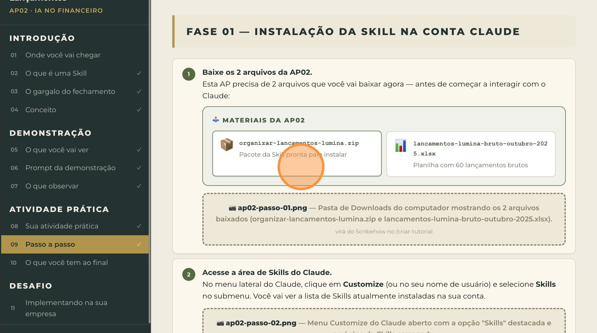
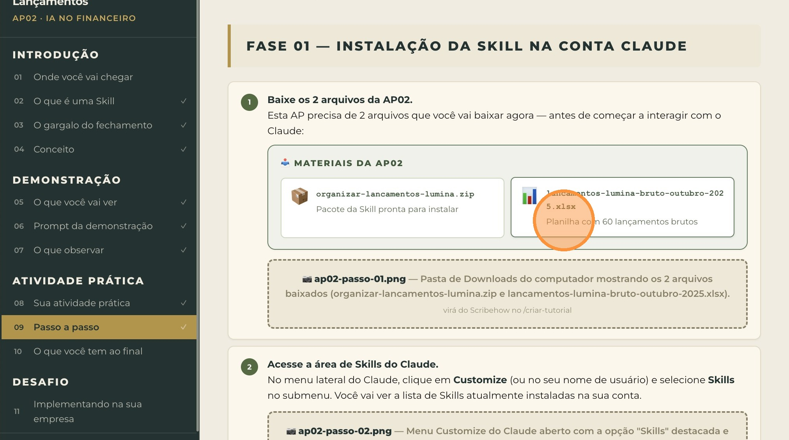
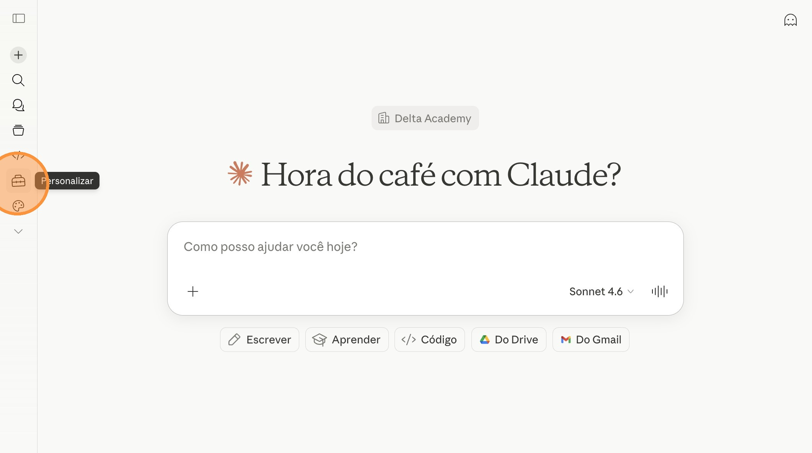
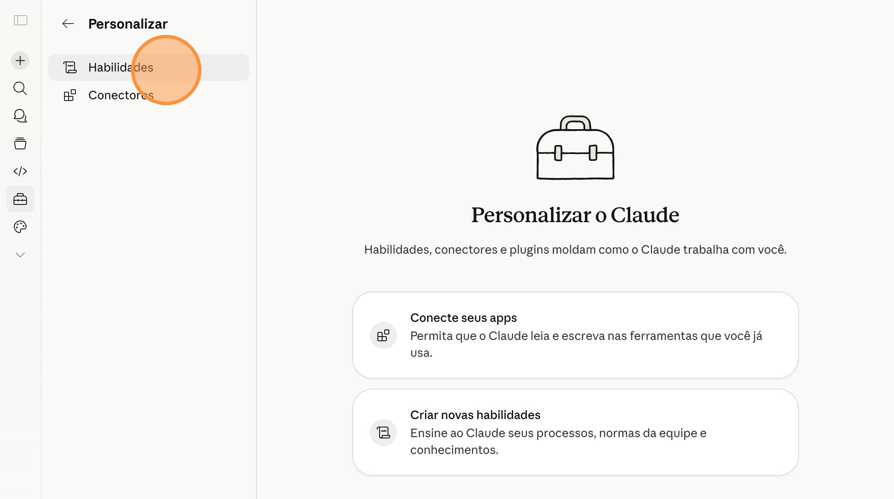
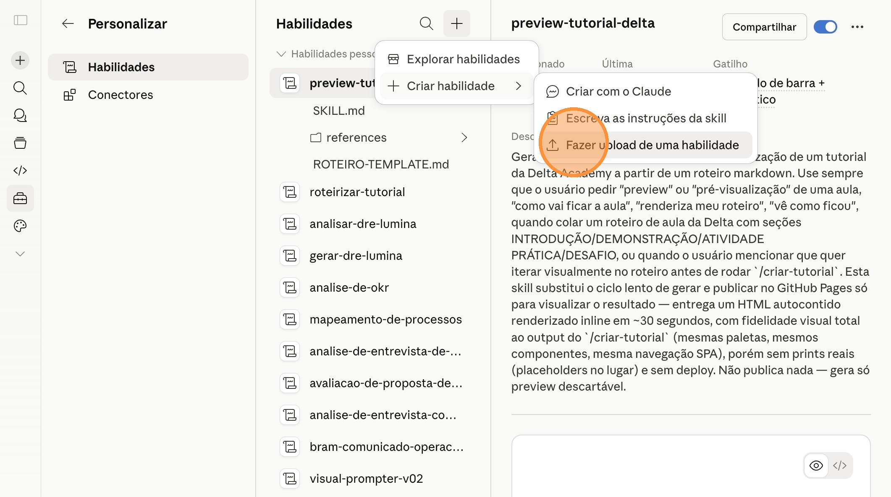
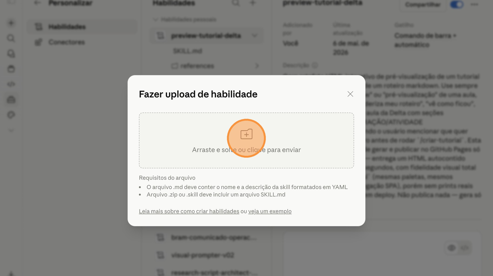
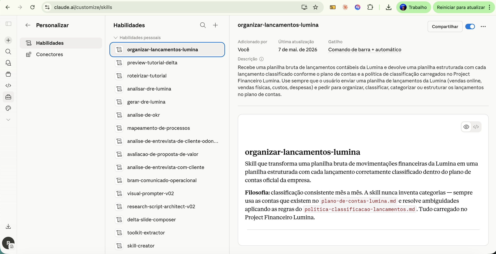
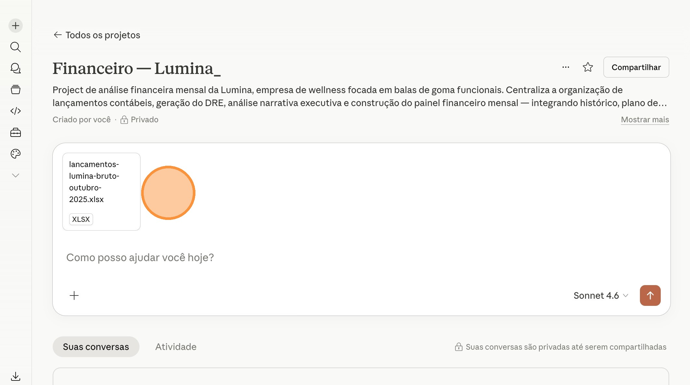
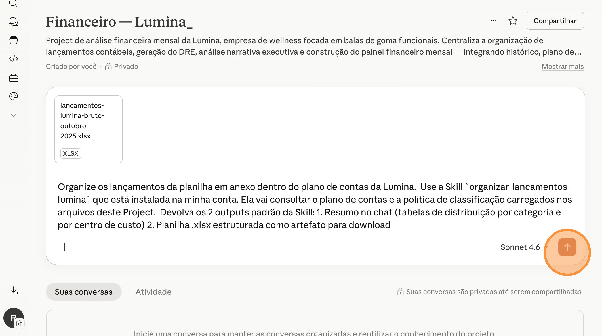
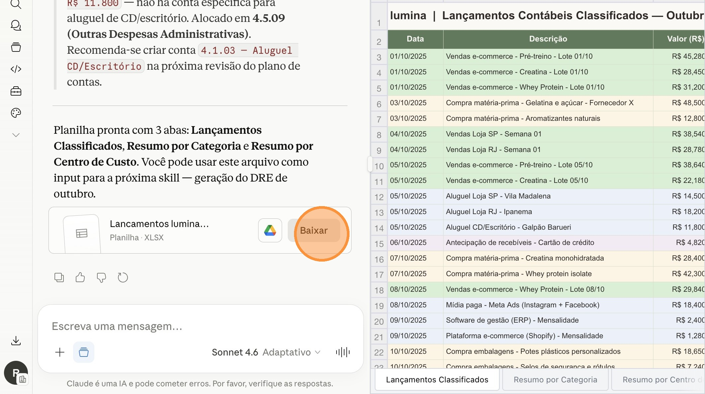

Ficha técnica
| Tipo | Introdução + Demonstração + Atividade Prática + Desafio |
| Duração | 14 minutos |
| Ferramenta | Claude Skills (acionada dentro do Project Financeiro Lumina) |
| Pré-requisito | AP01 concluída — Project Financeiro Lumina configurado com os 4 arquivos de contexto carregados |
| Entregável | Skill organizar-lancamentos-lumina instalada + planilha de outubro/2025 com 60 lançamentos classificados |
Antes de começar, veja o que você vai conquistar ao final desta atividade prática — e como ela se conecta ao destino final da aula A10.
Entregável final da AP02: a Skill "organizar-lancamentos-lumina" instalada na sua conta Claude e uma planilha estruturada de outubro/2025 com 60 lançamentos da Lumina classificados conforme o plano de contas — pronta para ser usada como input das próximas APs (DRE, análise narrativa e painel).
A planilha classificada que você vai gerar aqui é o input direto da AP03 — onde você vai gerar o DRE estruturado e a análise narrativa. Sem lançamentos classificados corretamente no plano de contas, não há DRE possível.
A AP02 é o primeiro passo do pipeline financeiro mensal automatizado que você vai construir ao longo da aula.
Uma Skill no Claude é uma instrução salva que o Claude carrega automaticamente sempre que você precisa executar uma tarefa específica. Em vez de digitar o mesmo prompt longo todo mês, você instala a Skill uma vez e ela fica disponível para sempre na sua conta.
SKILL.md com instruções em linguagem natural. Você pode editar quando quiser.Sem a Skill, você teria que enviar um prompt de 50 linhas todo mês explicando o plano de contas, as regras de classificação e o formato de output esperado. Com a Skill, você manda uma frase curta ("organize os lançamentos da planilha em anexo") e a Skill faz o resto — porque toda a instrução longa já está salva permanentemente na sua conta.
Em qualquer empresa, o fechamento mensal financeiro segue 4 etapas:
Não é difícil tecnicamente — é demorado e repetitivo. Cada lançamento precisa ser olhado individualmente. Cada ambiguidade precisa ser resolvida consultando políticas internas. Quando o analista termina, já é dia 5 ou 7 do mês seguinte — atrasando o fechamento inteiro.
A Skill da AP02 elimina esse gargalo: classifica os 60 lançamentos da Lumina em menos de 1 minuto, aplicando rigorosamente o plano de contas e as regras da política de classificação carregados no Project.
Pense em um analista financeiro novo entrando na empresa. No primeiro mês, ele precisa estudar o plano de contas, memorizar as regras de classificação, aplicar essas regras lançamento a lançamento, e documentar as decisões ambíguas para o controller revisar.
Isso leva 3 a 5 dias por mês, todos os meses, para sempre.
A Skill faz exatamente o mesmo trabalho — mas em segundos, e sem inconsistências mês a mês.
Uma Skill é como automatizar o processo de chegar a uma decisão, não apenas a decisão em si. O Claude usa o plano de contas e a política de classificação que você carregou no Project para tomar a mesma decisão que o analista tomaria — só que em larga escala, instantaneamente, e sem variação subjetiva entre meses.
Você não está terceirizando o julgamento financeiro — está terceirizando a execução repetitiva desse julgamento.
A Skill é declarada em linguagem natural num arquivo chamado SKILL.md, com 4 partes principais:
As 4 partes do SKILL.md
- Frontmatter (YAML): nome da Skill + descrição com triggers (palavras-chave que ativam a Skill).
- PASSO 0 — Contexto obrigatório: quais arquivos do Project precisam estar carregados.
- PASSOS 1, 2, 3...: instruções da operação em sequência (receber, processar, devolver).
- Tom + Não faça + Tratamento de erros: garantias de qualidade do output.
A demonstração a seguir é apenas para ilustração durante a aula expositiva. Você não precisa testar agora — você terá sua própria atividade prática logo depois desta seção.
O professor demonstra o fluxo completo da Skill organizar-lancamentos-lumina em duas fases:
Fase 01 — Instalação da Skill na conta Claude (zero mensagens)
O professor abre a página Customize > Skills no Claude, faz upload do arquivo organizar-lancamentos-lumina.zip e ativa a Skill. A Skill aparece na lista das Skills instaladas na conta — pronta para ser usada em qualquer Project.
Fase 02 — Acionamento da Skill no Project (1 mensagem)
O professor abre o Project Financeiro Lumina (criado na AP01), inicia uma nova conversa dentro do Project e anexa a planilha bruta de outubro/2025. Em seguida, envia uma frase curta acionando a Skill:
"Organize os lançamentos da planilha em anexo dentro do plano de contas da Lumina."
O Claude reconhece os triggers da Skill, carrega o plano-de-contas-lumina.md e o politica-classificacao-lancamentos.md, e processa os 60 lançamentos. Em segundos, devolve 2 outputs:
- Resumo no chat — tabela com distribuição por categoria + distribuição por centro de custo.
- Planilha
.xlsxcomo artefato — planilha completa com classificação, prontinha para download.
Toda a inteligência operacional (regras de classificação, mapeamento conta a conta, formato de output) está dentro do SKILL.md instalado na sua conta. Quando você aciona a Skill, o Claude carrega automaticamente essas instruções — você não precisa repetir nada.
Este é o prompt que o professor usa para acionar a Skill na demonstração:
- A Skill carrega os arquivos do Project automaticamente. Sem precisar mencionar "leia o plano de contas" ou "consulte a política", o Claude já sabe onde buscar.
- O resumo no chat aparece em ~30 segundos, com tabelas de distribuição claras — antes mesmo da planilha completa terminar de ser gerada.
- A planilha
.xlsxvem como artefato pronto para download, com formatação visual minimalismo wellness premium da Lumina aplicada (cabeçalho verde-musgo, fonte Inter, linhas alternadas em branco quente). - Lançamentos ambíguos têm justificativa explícita na coluna "Justificativa" da planilha — o Claude documenta a decisão tomada (ex: "Frete classificado como Despesa Op · Logística porque a descrição menciona 'fulfillment'").
- Tudo isso consome 1 mensagem do Claude — porque a Skill está instalada e o Project tem o contexto carregado.
Você vai instalar agora a Skill organizar-lancamentos-lumina na sua conta Claude e usar a Skill para organizar a planilha bruta de outubro/2025 dentro do Project Financeiro Lumina (criado na AP01). Esta AP tem duas fases:
Estrutura da atividade
- Fase 01 — Instalação da Skill — baixe o pacote da Skill e faça upload em Customize > Skills (zero mensagens ao Claude).
- Fase 02 — Acionamento da Skill no Project — abra o Project, anexe a planilha bruta e envie a frase curta acionando a Skill (1 mensagem).
Você vai instalar a Skill via upload direto do .zip (zero mensagens) e depois acionar a Skill com uma única mensagem curta no chat (1 mensagem). A Skill faz o trabalho pesado consultando os arquivos do Project automaticamente — você não precisa enviar prompts longos.
Você vai precisar de 2 arquivos baixados antes de interagir com o Claude (Passos 01 e 02). Depois você instala a Skill via upload (Passos 03 a 06) e finalmente aciona a Skill no Project Financeiro Lumina com 1 mensagem (Passos 07 a 10).
Pré-requisito: o Project Financeiro Lumina precisa estar configurado (concluído na AP01) com os 4 arquivos de contexto carregados — em especial o plano-de-contas-lumina.md e o politica-classificacao-lancamentos.md, que a Skill consulta automaticamente.
Clique no card "organizar-lancamentos-lumina.zip" no bloco Materiais da AP02 acima para baixar o pacote da Skill no seu computador. Não descompacte — o Claude precisa do ZIP intacto para instalar.

Passo 01 — Baixe o pacote da Skill (ZIP)
Clique no card "lancamentos-lumina-bruto-outubro-2025.xlsx" para baixar a planilha bruta de 60 lançamentos contábeis da Lumina referente a outubro/2025.

Passo 02 — Baixe a planilha bruta de outubro/2025 (XLSX)
No menu lateral do Claude, clique no ícone "Personalizar" (ou Customize dependendo do idioma) para acessar as configurações da sua conta.

Passo 03 — Acesse o menu Personalizar
Dentro do menu Personalizar, selecione "Habilidades" (ou Skills) no submenu. Você vai ver a lista de Skills atualmente instaladas na sua conta.

Passo 04 — Clique em "Habilidades"
Na página de Habilidades, clique no botão "Fazer upload de uma habilidade" (ou + Add skill) para abrir o seletor de arquivo.

Passo 05 — Abra o uploader de Skills
Clique na área de upload e selecione o arquivo organizar-lancamentos-lumina.zip que você baixou no Passo 01. Após o upload, a Skill organizar-lancamentos-lumina vai aparecer na sua lista com o status Instalada / Ativada. Confirme que ela está ativa antes de prosseguir.

Passo 06 — Selecione o ZIP e instale a Skill
Você vai voltar para o Project Financeiro Lumina (criado na AP01) e enviar uma única mensagem com a planilha anexada. A Skill faz o resto.
Volte ao Project Financeiro Lumina (criado na AP01). Inicie uma nova conversa dentro do Project clicando em "+ Nova conversa".

Passo 07 — Abra uma nova conversa dentro do Project
No campo de mensagem, anexe o arquivo lancamentos-lumina-bruto-outubro-2025.xlsx (baixado no Passo 02) clicando no ícone de clipe 📎 ou arrastando o arquivo para o chat.

Passo 08 — Anexe a planilha bruta no campo de mensagem
Use o botão "Copiar prompt" abaixo para copiar o prompt da AP02. Cole no campo de mensagem (Cmd+V no Mac ou Ctrl+V no Windows) — junto com a planilha já anexada — e clique em enviar.

Passo 09 — Cole o prompt e envie (1 mensagem)
Cerca de 60 a 120 segundos para o Claude processar os 60 lançamentos e gerar a planilha estruturada com 3 abas.
A resposta do Claude vai aparecer em duas partes:
No chat: tabelas de distribuição por categoria (Receitas, Deduções, CPV, Despesas Op, Despesas Fin) e por centro de custo (E-commerce, Loja SP, Loja RJ, Matriz/Geral). Confira que o número total de lançamentos é 60.
Como artefato: planilha lancamentos-lumina-classificados-outubro-2025.xlsx com botão de download. Clique em "Baixar" para salvar no seu computador.

Passo 10 — Resumo no chat + planilha estruturada como artefato
Você sai desta atividade com
- A Skill
organizar-lancamentos-luminainstalada permanentemente na sua conta Claude — pronta para ser usada em qualquer mês futuro com qualquer planilha bruta. - Uma planilha estruturada de outubro/2025 com 60 lançamentos da Lumina classificados conforme o plano de contas (3 abas: dados completos + resumo por categoria + resumo por centro de custo).
- Visibilidade clara da operação financeira da Lumina em outubro/2025: quanto entrou por canal, quanto saiu em cada categoria de despesa, onde estão os maiores valores.
- A planilha pronta para ser usada como input da AP03, onde você vai gerar o DRE estruturado e a análise narrativa.
- Confiança operacional: você acabou de eliminar um dos passos mais demorados do fechamento mensal — em menos de 14 minutos.
Na próxima atividade prática você vai usar 2 Skills dentro da mesma conversa: a Skill gerar-dre-lumina que pega a planilha estruturada da AP02 e produz o DRE do mês, e a Skill analisar-dre-lumina que produz uma análise narrativa executiva no padrão Executive Summary.
Você sai da AP03 com o DRE estruturado + análise narrativa do mês — material rico para a liderança ler em 30 segundos.
Agora que você dominou a Skill de organização de lançamentos com o caso da Lumina, replique o mesmo processo para a realidade da sua empresa.
organizar-lancamentos-[empresa] customizadaO que fazer:
- Baixe o prompt de geração da Skill (
prompt-gerar-skill-organizar-lancamentos.md— disponível abaixo) — é o prompt que cria a Skill da Lumina, e que você vai customizar para a sua empresa. - Adapte o prompt trocando todas as menções à Lumina pelo perfil real da sua empresa:
- Setor (wellness → setor da sua empresa)
- Estrutura (3 produtos + e-commerce + 2 lojas → estrutura real da sua operação)
- Centros de Custo (E-commerce/Loja SP/Loja RJ → seus centros de custo reais)
- Regras de classificação (frete fulfillment, influenciadores → regras específicas do seu setor)
- Identidade visual (paleta minimalismo wellness → identidade real da sua marca)
- Envie o prompt adaptado ao Claude e gere a Skill
organizar-lancamentos-[empresa]customizada. - Faça upload do
.zipgerado em Customize > Skills na sua conta. - Garanta que o Project Financeiro da sua empresa (criado no Desafio da AP01) tem o
plano-de-contas-[empresa].mde apolitica-classificacao-[empresa].mdcarregados. - Acione a Skill com a planilha bruta real do mês mais recente fechado da sua empresa e valide o output.
Você já configurou o ambiente (AP01) e agora elimina o gargalo da classificação de lançamentos (AP02). Em 2 dias, você já cobriu 40% do pipeline financeiro completo da sua empresa.
Faça este desafio amanhã — em 5 dias você tem o pipeline rodando com os dados reais da sua empresa.